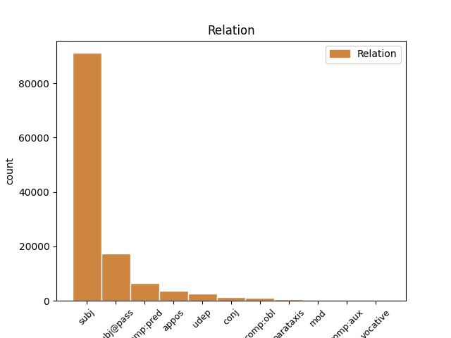
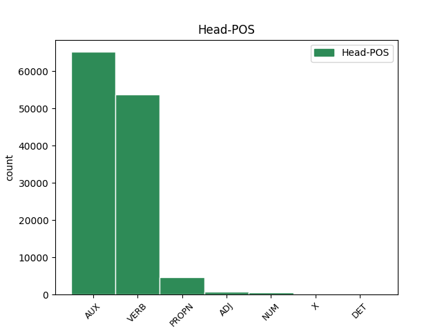
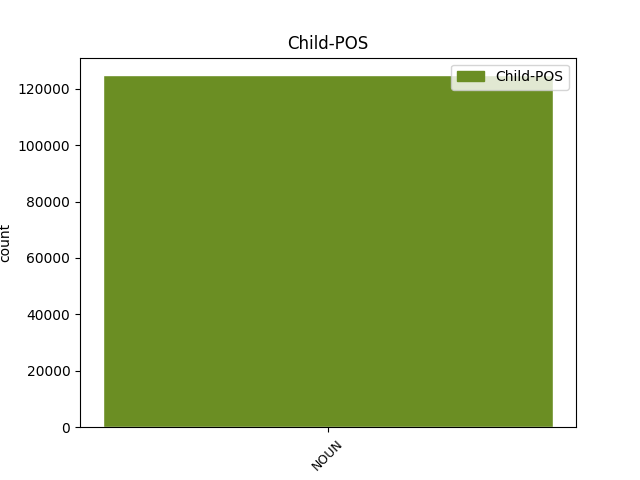

Distribution of features within this leaf



Agreement Rules sorted by frequency.
- When the dependent token is the subject(subj) of the head token, and the head token is VERB and the dependent token is NOUN.
1 Analysten Analyst NOUN NN Gender=Masc|Number=Plur|Person=3 2 subj _ _
2 warnen warnen VERB VVFIN Mood=Ind|Number=Plur|Person=3|Tense=Pres|VerbForm=Fin 0 _ _ _
3 dagegen _ _ _ _ 0 _ _ _
4 , _ _ _ _ 0 _ _ _
5 dass _ _ _ _ 0 _ _ _
6 der _ _ _ _ 0 _ _ _
7 Umsatz _ _ _ _ 0 _ _ _
8 der _ _ _ _ 0 _ _ _
9 Firma _ _ _ _ 0 _ _ _
10 durch _ _ _ _ 0 _ _ _
11 die _ _ _ _ 0 _ _ _
12 Auftragsstornierungen _ _ _ _ 0 _ _ _
13 um _ _ _ _ 0 _ _ _
14 etwa _ _ _ _ 0 _ _ _
15 19 _ _ _ _ 0 _ _ _
16 Prozent _ _ _ _ 0 _ _ _
17 sinken _ _ _ _ 0 _ _ _
18 werde _ _ _ _ 0 _ _ _
19 . _ _ _ _ 0 _ _ _
1 Analysten _ _ _ _ 0 _ _ _
2 warnen _ _ _ _ 0 _ _ _
3 dagegen _ _ _ _ 0 _ _ _
4 , _ _ _ _ 0 _ _ _
5 dass _ _ _ _ 0 _ _ _
6 der _ _ _ _ 0 _ _ _
7 Umsatz Umsatz NOUN NN Gender=Masc|Number=Sing|Person=3 18 subj _ _
8 der _ _ _ _ 0 _ _ _
9 Firma _ _ _ _ 0 _ _ _
10 durch _ _ _ _ 0 _ _ _
11 die _ _ _ _ 0 _ _ _
12 Auftragsstornierungen _ _ _ _ 0 _ _ _
13 um _ _ _ _ 0 _ _ _
14 etwa _ _ _ _ 0 _ _ _
15 19 _ _ _ _ 0 _ _ _
16 Prozent _ _ _ _ 0 _ _ _
17 sinken _ _ _ _ 0 _ _ _
18 werde werden AUX VAFIN Mood=Ind|Number=Sing|Person=3|Tense=Pres|VerbForm=Fin 0 _ _ _
19 . _ _ _ _ 0 _ _ _
1 Vizepräsidentin _ _ _ _ 0 _ _ _
2 Judy _ _ _ _ 0 _ _ _
3 Qua _ _ _ _ 0 _ _ _
4 erklärte _ _ _ _ 0 _ _ _
5 , _ _ _ _ 0 _ _ _
6 der _ _ _ _ 0 _ _ _
7 Gewinn Gewinn NOUN NN Gender=Masc|Number=Sing|Person=3 10 subj@pass _ _
8 des _ _ _ _ 0 _ _ _
9 Unternehmens _ _ _ _ 0 _ _ _
10 werde werden AUX VAFIN Mood=Ind|Number=Sing|Person=3|Tense=Pres|VerbForm=Fin 0 _ _ _
11 durch _ _ _ _ 0 _ _ _
12 die _ _ _ _ 0 _ _ _
13 Reduzierung _ _ _ _ 0 _ _ _
14 nicht _ _ _ _ 0 _ _ _
15 negativ _ _ _ _ 0 _ _ _
16 beeinflusst _ _ _ _ 0 _ _ _
17 . _ _ _ _ 0 _ _ _
1 In _ _ _ _ 0 _ _ _
2 ihren _ _ _ _ 0 _ _ _
3 Augen _ _ _ _ 0 _ _ _
4 ist sein AUX VAFIN Mood=Ind|Number=Sing|Person=3|Tense=Pres|VerbForm=Fin 0 _ _ _
5 der _ _ _ _ 0 _ _ _
6 Pilz _ _ _ _ 0 _ _ _
7 ein _ _ _ _ 0 _ _ _
8 garstiger _ _ _ _ 0 _ _ _
9 CD-Fresser Esser NOUN NN Gender=Masc|Number=Sing|Person=3 4 comp:pred _ _
10 , _ _ _ _ 0 _ _ _
11 der _ _ _ _ 0 _ _ _
12 etlichen _ _ _ _ 0 _ _ _
13 Backups _ _ _ _ 0 _ _ _
14 und _ _ _ _ 0 _ _ _
15 Datensammlungen _ _ _ _ 0 _ _ _
16 den _ _ _ _ 0 _ _ _
17 Garaus _ _ _ _ 0 _ _ _
18 machen _ _ _ _ 0 _ _ _
19 könnte _ _ _ _ 0 _ _ _
20 . _ _ _ _ 0 _ _ _
1 Iomega Iomega PROPN NE Case=Nom|Number=Sing|Person=3 0 _ _ _
2 , _ _ _ _ 0 _ _ _
3 Spezialist Spezialist NOUN NN Gender=Masc|Number=Sing|Person=3 1 appos _ _
4 für _ _ _ _ 0 _ _ _
5 Speicherlösungen _ _ _ _ 0 _ _ _
6 , _ _ _ _ 0 _ _ _
7 liefert _ _ _ _ 0 _ _ _
8 nun _ _ _ _ 0 _ _ _
9 seinen _ _ _ _ 0 _ _ _
10 portablen _ _ _ _ 0 _ _ _
11 CD-RW-Brenner _ _ _ _ 0 _ _ _
12 Predator _ _ _ _ 0 _ _ _
13 in _ _ _ _ 0 _ _ _
14 den _ _ _ _ 0 _ _ _
15 USA _ _ _ _ 0 _ _ _
16 aus _ _ _ _ 0 _ _ _
17 . _ _ _ _ 0 _ _ _
1 Der _ _ _ _ 0 _ _ _
2 Computer _ _ _ _ 0 _ _ _
3 ist _ _ _ _ 0 _ _ _
4 mitsamt _ _ _ _ 0 _ _ _
5 Pentium Pentium PROPN NE Number=Sing|Person=3 0 _ _ _
6 III _ _ _ _ 0 _ _ _
7 , _ _ _ _ 0 _ _ _
8 Festplatte Festplatte NOUN NN Gender=Fem|Number=Sing|Person=3 5 conj _ _
9 mit _ _ _ _ 0 _ _ _
10 1 _ _ _ _ 0 _ _ _
11 GByte _ _ _ _ 0 _ _ _
12 Kapazität _ _ _ _ 0 _ _ _
13 und _ _ _ _ 0 _ _ _
14 drahtloser _ _ _ _ 0 _ _ _
15 Internetanbindung _ _ _ _ 0 _ _ _
16 in _ _ _ _ 0 _ _ _
17 das _ _ _ _ 0 _ _ _
18 Innenfutter _ _ _ _ 0 _ _ _
19 der _ _ _ _ 0 _ _ _
20 Jacke _ _ _ _ 0 _ _ _
21 eingenäht _ _ _ _ 0 _ _ _
22 . _ _ _ _ 0 _ _ _
1 Nachdem _ _ _ _ 0 _ _ _
2 Roxio _ _ _ _ 0 _ _ _
3 lange _ _ _ _ 0 _ _ _
4 Zeit Zeit NOUN NN Gender=Fem|Number=Sing|Person=3 18 udep _ _
5 kein _ _ _ _ 0 _ _ _
6 Update _ _ _ _ 0 _ _ _
7 auf _ _ _ _ 0 _ _ _
8 WinOnCD _ _ _ _ 0 _ _ _
9 Version _ _ _ _ 0 _ _ _
10 3.8 _ _ _ _ 0 _ _ _
11 für _ _ _ _ 0 _ _ _
12 Käufer _ _ _ _ 0 _ _ _
13 der _ _ _ _ 0 _ _ _
14 Vorversion _ _ _ _ 0 _ _ _
15 zur _ _ _ _ 0 _ _ _
16 Verfügung _ _ _ _ 0 _ _ _
17 stellen _ _ _ _ 0 _ _ _
18 wollte wollen AUX VMFIN Mood=Ind|Number=Sing|Person=3|Tense=Past|VerbForm=Fin|VerbType=Mod 0 _ _ _
19 , _ _ _ _ 0 _ _ _
20 hat _ _ _ _ 0 _ _ _
21 man _ _ _ _ 0 _ _ _
22 sich _ _ _ _ 0 _ _ _
23 nun _ _ _ _ 0 _ _ _
24 doch _ _ _ _ 0 _ _ _
25 zu _ _ _ _ 0 _ _ _
26 einem _ _ _ _ 0 _ _ _
27 entsprechenden _ _ _ _ 0 _ _ _
28 Angebot _ _ _ _ 0 _ _ _
29 entschlossen _ _ _ _ 0 _ _ _
30 . _ _ _ _ 0 _ _ _
1 IDC _ _ _ _ 0 _ _ _
2 hat _ _ _ _ 0 _ _ _
3 ermittelt _ _ _ _ 0 _ _ _
4 , _ _ _ _ 0 _ _ _
5 dass _ _ _ _ 0 _ _ _
6 71 _ _ _ _ 0 _ _ _
7 Prozent _ _ _ _ 0 _ _ _
8 der _ _ _ _ 0 _ _ _
9 befragten _ _ _ _ 0 _ _ _
10 Unternehmen _ _ _ _ 0 _ _ _
11 davon _ _ _ _ 0 _ _ _
12 ausgehen _ _ _ _ 0 _ _ _
13 , _ _ _ _ 0 _ _ _
14 dass _ _ _ _ 0 _ _ _
15 ihre _ _ _ _ 0 _ _ _
16 Linux-Server _ _ _ _ 0 _ _ _
17 99,99 _ _ _ _ 0 _ _ _
18 Prozent Prozent NOUN NN Gender=Neut|Number=Plur|Person=3 21 udep _ _
19 der _ _ _ _ 0 _ _ _
20 Zeit _ _ _ _ 0 _ _ _
21 laufen laufen VERB VVFIN Mood=Ind|Number=Plur|Person=3|Tense=Pres|VerbForm=Fin 0 _ _ _
22 - _ _ _ _ 0 _ _ _
23 also _ _ _ _ 0 _ _ _
24 gerade _ _ _ _ 0 _ _ _
25 mal _ _ _ _ 0 _ _ _
26 53 _ _ _ _ 0 _ _ _
27 Minuten _ _ _ _ 0 _ _ _
28 pro _ _ _ _ 0 _ _ _
29 Jahr _ _ _ _ 0 _ _ _
30 ausfallen _ _ _ _ 0 _ _ _
31 . _ _ _ _ 0 _ _ _
1 Nach _ _ _ _ 0 _ _ _
2 dem _ _ _ _ 0 _ _ _
3 erfolgreichen _ _ _ _ 0 _ _ _
4 Start _ _ _ _ 0 _ _ _
5 der _ _ _ _ 0 _ _ _
6 im _ _ _ _ 0 _ _ _
7 Februar _ _ _ _ 0 _ _ _
8 angekündigten _ _ _ _ 0 _ _ _
9 Feldversuche _ _ _ _ 0 _ _ _
10 stellt stellen VERB VVFIN Mood=Ind|Number=Sing|Person=3|Tense=Pres|VerbForm=Fin 0 _ _ _
11 der _ _ _ _ 0 _ _ _
12 Essener _ _ _ _ 0 _ _ _
13 RWE-Konzern _ _ _ _ 0 _ _ _
14 nun _ _ _ _ 0 _ _ _
15 seine _ _ _ _ 0 _ _ _
16 Powerline-Technik _ _ _ _ 0 _ _ _
17 zur _ _ _ _ 0 _ _ _
18 Datenübertragung _ _ _ _ 0 _ _ _
19 über _ _ _ _ 0 _ _ _
20 das _ _ _ _ 0 _ _ _
21 Stromnetz _ _ _ _ 0 _ _ _
22 der _ _ _ _ 0 _ _ _
23 breiten _ _ _ _ 0 _ _ _
24 Öffentlichkeit Öffentlichkeit NOUN NN Gender=Fem|Number=Sing|Person=3 10 comp:obl _ _
25 vor _ _ _ _ 0 _ _ _
26 . _ _ _ _ 0 _ _ _
1 Weniger _ _ _ _ 0 _ _ _
2 Glück _ _ _ _ 0 _ _ _
3 hatte haben AUX VAFIN Mood=Ind|Number=Sing|Person=3|Tense=Past|VerbForm=Fin 0 _ _ _
4 man _ _ _ _ 0 _ _ _
5 bei _ _ _ _ 0 _ _ _
6 der _ _ _ _ 0 _ _ _
7 Vorführung _ _ _ _ 0 _ _ _
8 einer _ _ _ _ 0 _ _ _
9 Kontaktaufnahme _ _ _ _ 0 _ _ _
10 zwischen _ _ _ _ 0 _ _ _
11 Pocket _ _ _ _ 0 _ _ _
12 PC _ _ _ _ 0 _ _ _
13 und _ _ _ _ 0 _ _ _
14 Ericcson-Handy _ _ _ _ 0 _ _ _
15 per _ _ _ _ 0 _ _ _
16 Bluetooth _ _ _ _ 0 _ _ _
17 , _ _ _ _ 0 _ _ _
18 da _ _ _ _ 0 _ _ _
19 der _ _ _ _ 0 _ _ _
20 Akku _ _ _ _ 0 _ _ _
21 des _ _ _ _ 0 _ _ _
22 Pocket _ _ _ _ 0 _ _ _
23 PCs _ _ _ _ 0 _ _ _
24 von _ _ _ _ 0 _ _ _
25 Casio _ _ _ _ 0 _ _ _
26 fast _ _ _ _ 0 _ _ _
27 leer _ _ _ _ 0 _ _ _
28 war _ _ _ _ 0 _ _ _
29 , _ _ _ _ 0 _ _ _
30 ein _ _ _ _ 0 _ _ _
31 häufiges _ _ _ _ 0 _ _ _
32 Problem Problem NOUN NN Gender=Neut|Number=Sing|Person=3 3 parataxis _ _
33 bei _ _ _ _ 0 _ _ _
34 der _ _ _ _ 0 _ _ _
35 aktuellen _ _ _ _ 0 _ _ _
36 Gerätegeneration _ _ _ _ 0 _ _ _
37 . _ _ _ _ 0 _ _ _
1 Auf _ _ _ _ 0 _ _ _
2 der _ _ _ _ 0 _ _ _
3 offiziellen _ _ _ _ 0 _ _ _
4 Präsentations-Show _ _ _ _ 0 _ _ _
5 in _ _ _ _ 0 _ _ _
6 Dallas _ _ _ _ 0 _ _ _
7 will _ _ _ _ 0 _ _ _
8 Ellison _ _ _ _ 0 _ _ _
9 1100 1100 NUM CARD Number=Plur|NumType=Card|Person=3 0 _ _ _
10 dieser _ _ _ _ 0 _ _ _
11 Geräte Gerät NOUN NN Gender=Neut|Number=Plur|Person=3 9 mod _ _
12 an _ _ _ _ 0 _ _ _
13 eine _ _ _ _ 0 _ _ _
14 lokale _ _ _ _ 0 _ _ _
15 Schule _ _ _ _ 0 _ _ _
16 als _ _ _ _ 0 _ _ _
17 Spende _ _ _ _ 0 _ _ _
18 übergeben _ _ _ _ 0 _ _ _
19 . _ _ _ _ 0 _ _ _
1 Deutscher _ _ _ _ 0 _ _ _
2 Computermarkt _ _ _ _ 0 _ _ _
3 wächst wachsen VERB VVFIN Mood=Ind|Number=Sing|Person=3|Tense=Pres|VerbForm=Fin 0 _ _ _
4 unterdurchschnittlich _ _ _ _ 0 _ _ _
5 ( _ _ _ _ 0 _ _ _
6 Update Update NOUN NN Gender=Neut|Number=Sing|Person=3 3 parataxis _ _
7 ) _ _ _ _ 0 _ _ _
1 Kapazitäten _ _ _ _ 0 _ _ _
2 von _ _ _ _ 0 _ _ _
3 20 _ _ _ _ 0 _ _ _
4 , _ _ _ _ 0 _ _ _
5 40 _ _ _ _ 0 _ _ _
6 , _ _ _ _ 0 _ _ _
7 60 60 NUM CARD Number=Plur|NumType=Card|Person=3 0 _ _ _
8 und _ _ _ _ 0 _ _ _
9 80 _ _ _ _ 0 _ _ _
10 GByte GByte NOUN NN Gender=Neut|Number=Plur|Person=3 7 conj _ _
11 sind _ _ _ _ 0 _ _ _
12 momentan _ _ _ _ 0 _ _ _
13 angekündigt _ _ _ _ 0 _ _ _
14 ; _ _ _ _ 0 _ _ _
15 höhere _ _ _ _ 0 _ _ _
16 Kapazitäten _ _ _ _ 0 _ _ _
17 seien _ _ _ _ 0 _ _ _
18 zwar _ _ _ _ 0 _ _ _
19 möglich _ _ _ _ 0 _ _ _
20 , _ _ _ _ 0 _ _ _
21 aber _ _ _ _ 0 _ _ _
22 zurzeit _ _ _ _ 0 _ _ _
23 aufgrund _ _ _ _ 0 _ _ _
24 mangelnder _ _ _ _ 0 _ _ _
25 Nachfrage _ _ _ _ 0 _ _ _
26 noch _ _ _ _ 0 _ _ _
27 nicht _ _ _ _ 0 _ _ _
28 geplant _ _ _ _ 0 _ _ _
29 . _ _ _ _ 0 _ _ _
1 Dem _ _ _ _ 0 _ _ _
2 lange _ _ _ _ 0 _ _ _
3 Zeit Zeit NOUN NN Gender=Fem|Number=Sing|Person=3 4 udep _ _
4 kränkelnden kränkeln ADJ ADJA Degree=Pos|Number=Sing 0 _ _ _
5 französischen _ _ _ _ 0 _ _ _
6 Elektronikkonzern _ _ _ _ 0 _ _ _
7 Alcatel _ _ _ _ 0 _ _ _
8 beschert _ _ _ _ 0 _ _ _
9 offensichtlich _ _ _ _ 0 _ _ _
10 der _ _ _ _ 0 _ _ _
11 Mobilfunkboom _ _ _ _ 0 _ _ _
12 eine _ _ _ _ 0 _ _ _
13 Zukunftsperspektive _ _ _ _ 0 _ _ _
14 . _ _ _ _ 0 _ _ _
1 Das _ _ _ _ 0 _ _ _
2 bleibt bleiben VERB VVFIN Mood=Ind|Number=Sing|Person=3|Tense=Pres|VerbForm=Fin 0 _ _ _
3 der _ _ _ _ 0 _ _ _
4 einzige _ _ _ _ 0 _ _ _
5 Hinweis Hinweis NOUN NN Gender=Masc|Number=Sing|Person=3 2 comp:pred _ _
6 darauf _ _ _ _ 0 _ _ _
7 , _ _ _ _ 0 _ _ _
8 daß _ _ _ _ 0 _ _ _
9 die _ _ _ _ 0 _ _ _
10 Zuständigkeit _ _ _ _ 0 _ _ _
11 der _ _ _ _ 0 _ _ _
12 IT-Politik _ _ _ _ 0 _ _ _
13 dem _ _ _ _ 0 _ _ _
14 Bundeswirtschaftsministerium _ _ _ _ 0 _ _ _
15 zugeschlagen _ _ _ _ 0 _ _ _
16 werden _ _ _ _ 0 _ _ _
17 könnte _ _ _ _ 0 _ _ _
18 . _ _ _ _ 0 _ _ _
1 Die _ _ _ _ 0 _ _ _
2 japanische japanisch ADJ ADJA Degree=Pos|Gender=Fem|Number=Sing 0 _ _ _
3 und _ _ _ _ 0 _ _ _
4 die _ _ _ _ 0 _ _ _
5 US-Regierung Regierung NOUN NN Gender=Fem|Number=Sing|Person=3 2 conj _ _
6 haben _ _ _ _ 0 _ _ _
7 den _ _ _ _ 0 _ _ _
8 Konsolenbauer _ _ _ _ 0 _ _ _
9 Sony _ _ _ _ 0 _ _ _
10 aufgefordert _ _ _ _ 0 _ _ _
11 , _ _ _ _ 0 _ _ _
12 die _ _ _ _ 0 _ _ _
13 Playstation _ _ _ _ 0 _ _ _
14 2 _ _ _ _ 0 _ _ _
15 weiterhin _ _ _ _ 0 _ _ _
16 nur _ _ _ _ 0 _ _ _
17 in _ _ _ _ 0 _ _ _
18 Japan _ _ _ _ 0 _ _ _
19 zu _ _ _ _ 0 _ _ _
20 produzieren _ _ _ _ 0 _ _ _
21 . _ _ _ _ 0 _ _ _
1 Der _ _ _ _ 0 _ _ _
2 Flatrate-Anbieter _ _ _ _ 0 _ _ _
3 Sonnet _ _ _ _ 0 _ _ _
4 verwehrt _ _ _ _ 0 _ _ _
5 seit _ _ _ _ 0 _ _ _
6 Freitag _ _ _ _ 0 _ _ _
7 Abend _ _ _ _ 0 _ _ _
8 einigen einig ADJ ADJA Case=Dat|Degree=Pos|Number=Plur 0 _ _ _
9 seiner _ _ _ _ 0 _ _ _
10 Kunden Kunde NOUN NN Number=Plur|Person=3 8 mod _ _
11 die _ _ _ _ 0 _ _ _
12 Einwahl _ _ _ _ 0 _ _ _
13 . _ _ _ _ 0 _ _ _
1 Dies _ _ _ _ 0 _ _ _
2 könnte _ _ _ _ 0 _ _ _
3 schon _ _ _ _ 0 _ _ _
4 eher _ _ _ _ 0 _ _ _
5 bei _ _ _ _ 0 _ _ _
6 dem _ _ _ _ 0 _ _ _
7 von _ _ _ _ 0 _ _ _
8 den _ _ _ _ 0 _ _ _
9 Bell Bell PROPN NE Number=Sing|Person=3 0 _ _ _
10 Labs _ _ _ _ 0 _ _ _
11 der _ _ _ _ 0 _ _ _
12 Firma Firma NOUN NN Gender=Fem|Number=Sing|Person=3 9 mod _ _
13 Lucent _ _ _ _ 0 _ _ _
14 entwickelten _ _ _ _ 0 _ _ _
15 Elektronen-"Skalpell" _ _ _ _ 0 _ _ _
16 der _ _ _ _ 0 _ _ _
17 Fall _ _ _ _ 0 _ _ _
18 sein _ _ _ _ 0 _ _ _
19 : _ _ _ _ 0 _ _ _
1 8.106 _ _ _ _ 0 _ _ _
2 Unternehmen _ _ _ _ 0 _ _ _
3 präsentierten _ _ _ _ 0 _ _ _
4 sich _ _ _ _ 0 _ _ _
5 den _ _ _ _ 0 _ _ _
6 Gästen _ _ _ _ 0 _ _ _
7 - _ _ _ _ 0 _ _ _
8 gegenüber _ _ _ _ 0 _ _ _
9 7.891 _ _ _ _ 0 _ _ _
10 im _ _ _ _ 0 _ _ _
11 Jahre _ _ _ _ 0 _ _ _
12 2000 _ _ _ _ 0 _ _ _
13 - _ _ _ _ 0 _ _ _
14 davon _ _ _ _ 0 _ _ _
15 kamen _ _ _ _ 0 _ _ _
16 3.060 3.060 NUM CARD Number=Plur|NumType=Card|Person=3 0 _ _ _
17 ( _ _ _ _ 0 _ _ _
18 rund _ _ _ _ 0 _ _ _
19 38 _ _ _ _ 0 _ _ _
20 Prozent Prozent NOUN NN Gender=Neut|Number=Plur|Person=3 16 appos _ _
21 ) _ _ _ _ 0 _ _ _
22 aus _ _ _ _ 0 _ _ _
23 dem _ _ _ _ 0 _ _ _
24 Ausland _ _ _ _ 0 _ _ _
25 . _ _ _ _ 0 _ _ _
1 Der _ _ _ _ 0 _ _ _
2 Telekom-Branchenführer _ _ _ _ 0 _ _ _
3 AT&T _ _ _ _ 0 _ _ _
4 ist sein AUX VAFIN Mood=Ind|Number=Sing|Person=3|Tense=Pres|VerbForm=Fin 0 _ _ _
5 der _ _ _ _ 0 _ _ _
6 größte _ _ _ _ 0 _ _ _
7 , _ _ _ _ 0 _ _ _
8 AOL _ _ _ _ 0 _ _ _
9 Time _ _ _ _ 0 _ _ _
10 Warner _ _ _ _ 0 _ _ _
11 der _ _ _ _ 0 _ _ _
12 zweitgrößte _ _ _ _ 0 _ _ _
13 amerikanische _ _ _ _ 0 _ _ _
14 Kabelfernsehnetzbetreiber Betreiber NOUN NN Gender=Masc|Number=Sing|Person=3 4 conj _ _
15 . _ _ _ _ 0 _ _ _
1 In _ _ _ _ 0 _ _ _
2 der _ _ _ _ 0 _ _ _
3 Kategorie _ _ _ _ 0 _ _ _
4 " _ _ _ _ 0 _ _ _
5 Behörden _ _ _ _ 0 _ _ _
6 und _ _ _ _ 0 _ _ _
7 Verwaltung _ _ _ _ 0 _ _ _
8 " _ _ _ _ 0 _ _ _
9 gewann _ _ _ _ 0 _ _ _
10 sinnigerweise _ _ _ _ 0 _ _ _
11 die _ _ _ _ 0 _ _ _
12 privatisierte _ _ _ _ 0 _ _ _
13 Deutsche _ _ _ _ 0 _ _ _
14 Bahn _ _ _ _ 0 _ _ _
15 AG _ _ _ _ 0 _ _ _
16 mit _ _ _ _ 0 _ _ _
17 ihrem _ _ _ _ 0 _ _ _
18 3-S-Zentralen zentral ADJ ADJA Degree=Pos|Number=Sing 0 _ _ _
19 ( _ _ _ _ 0 _ _ _
20 " _ _ _ _ 0 _ _ _
21 Sicherheit Sicherheit NOUN NN Gender=Fem|Number=Sing|Person=3 18 appos _ _
22 , _ _ _ _ 0 _ _ _
23 Sauberkeit _ _ _ _ 0 _ _ _
24 und _ _ _ _ 0 _ _ _
25 Service _ _ _ _ 0 _ _ _
26 " _ _ _ _ 0 _ _ _
27 ) _ _ _ _ 0 _ _ _
28 , _ _ _ _ 0 _ _ _
29 bei _ _ _ _ 0 _ _ _
30 denen _ _ _ _ 0 _ _ _
31 42 _ _ _ _ 0 _ _ _
32 Bahnhöfe _ _ _ _ 0 _ _ _
33 und _ _ _ _ 0 _ _ _
34 der _ _ _ _ 0 _ _ _
35 vorgelagerte _ _ _ _ 0 _ _ _
36 öffentliche _ _ _ _ 0 _ _ _
37 Raum _ _ _ _ 0 _ _ _
38 in _ _ _ _ 0 _ _ _
39 Deutschland _ _ _ _ 0 _ _ _
40 videoüberwacht _ _ _ _ 0 _ _ _
41 werden _ _ _ _ 0 _ _ _
42 . _ _ _ _ 0 _ _ _
1 Allerdings _ _ _ _ 0 _ _ _
2 , _ _ _ _ 0 _ _ _
3 so _ _ _ _ 0 _ _ _
4 Ember _ _ _ _ 0 _ _ _
5 , _ _ _ _ 0 _ _ _
6 verkünde verkünden VERB VVFIN Mood=Ind|Number=Sing|Person=3|Tense=Pres|VerbForm=Fin 0 _ _ _
7 er _ _ _ _ 0 _ _ _
8 das _ _ _ _ 0 _ _ _
9 Urteil _ _ _ _ 0 _ _ _
10 nicht _ _ _ _ 0 _ _ _
11 frohen _ _ _ _ 0 _ _ _
12 Herzens Herzen NOUN NN Case=Gen|Gender=Neut|Number=Sing|Person=3 6 mod _ _
13 , _ _ _ _ 0 _ _ _
14 denn _ _ _ _ 0 _ _ _
15 es _ _ _ _ 0 _ _ _
16 sei _ _ _ _ 0 _ _ _
17 " _ _ _ _ 0 _ _ _
18 so _ _ _ _ 0 _ _ _
19 oder _ _ _ _ 0 _ _ _
20 so _ _ _ _ 0 _ _ _
21 unbefriedigend _ _ _ _ 0 _ _ _
22 " _ _ _ _ 0 _ _ _
23 . _ _ _ _ 0 _ _ _
1 Insgesamt _ _ _ _ 0 _ _ _
2 ist _ _ _ _ 0 _ _ _
3 der _ _ _ _ 0 _ _ _
4 TV-Sound _ _ _ _ 0 _ _ _
5 der _ _ _ _ 0 _ _ _
6 Karte _ _ _ _ 0 _ _ _
7 damit _ _ _ _ 0 _ _ _
8 weit _ _ _ _ 0 _ _ _
9 von _ _ _ _ 0 _ _ _
10 dem _ _ _ _ 0 _ _ _
11 entfernt _ _ _ _ 0 _ _ _
12 , _ _ _ _ 0 _ _ _
13 was _ _ _ _ 0 _ _ _
14 man _ _ _ _ 0 _ _ _
15 guten _ _ _ _ 0 _ _ _
16 Gewissens Gewissen NOUN NN Case=Gen|Gender=Neut|Number=Sing|Person=3 20 mod _ _
17 als _ _ _ _ 0 _ _ _
18 Stereo-Ton _ _ _ _ 0 _ _ _
19 bezeichnen _ _ _ _ 0 _ _ _
20 würde werden AUX VAFIN Mood=Ind|Number=Sing|Person=3|Tense=Pres|VerbForm=Fin 0 _ _ _
21 . _ _ _ _ 0 _ _ _
1 ICANN _ _ _ _ 0 _ _ _
2 plant planen VERB VVFIN Mood=Ind|Number=Sing|Person=3|Tense=Pres|VerbForm=Fin 0 _ _ _
3 erste _ _ _ _ 0 _ _ _
4 weltweite _ _ _ _ 0 _ _ _
5 allgemeine _ _ _ _ 0 _ _ _
6 Wahlen _ _ _ _ 0 _ _ _
7 für _ _ _ _ 0 _ _ _
8 Internetnutzer _ _ _ _ 0 _ _ _
9 und _ _ _ _ 0 _ _ _
10 Die _ _ _ _ 0 _ _ _
11 Zukunft Zukunft NOUN NN Gender=Fem|Number=Sing|Person=3 2 conj _ _
12 der _ _ _ _ 0 _ _ _
13 Demokratie _ _ _ _ 0 _ _ _
1 Ohne _ _ _ _ 0 _ _ _
2 italienischen _ _ _ _ 0 _ _ _
3 Partner _ _ _ _ 0 _ _ _
4 dürfte dürfen AUX VMFIN Mood=Ind|Number=Sing|Person=3|Tense=Pres|VerbForm=Fin|VerbType=Mod 0 _ _ _
5 es _ _ _ _ 0 _ _ _
6 der _ _ _ _ 0 _ _ _
7 Telekom _ _ _ _ 0 _ _ _
8 um _ _ _ _ 0 _ _ _
9 einiges _ _ _ _ 0 _ _ _
10 schwerer _ _ _ _ 0 _ _ _
11 Fallen Fallen NOUN NN Gender=Neut|Number=Sing|Person=3 4 comp:aux _ _
12 , _ _ _ _ 0 _ _ _
13 eine _ _ _ _ 0 _ _ _
14 UMTS-Lizenz _ _ _ _ 0 _ _ _
15 in _ _ _ _ 0 _ _ _
16 Italien _ _ _ _ 0 _ _ _
17 zu _ _ _ _ 0 _ _ _
18 ergattern _ _ _ _ 0 _ _ _
19 - _ _ _ _ 0 _ _ _
20 und _ _ _ _ 0 _ _ _
21 das _ _ _ _ 0 _ _ _
22 südeuropäische _ _ _ _ 0 _ _ _
23 Land _ _ _ _ 0 _ _ _
24 zählt _ _ _ _ 0 _ _ _
25 zu _ _ _ _ 0 _ _ _
26 einem _ _ _ _ 0 _ _ _
27 der _ _ _ _ 0 _ _ _
28 wichtigsten _ _ _ _ 0 _ _ _
29 Märkte _ _ _ _ 0 _ _ _
30 , _ _ _ _ 0 _ _ _
31 wenn _ _ _ _ 0 _ _ _
32 es _ _ _ _ 0 _ _ _
33 um _ _ _ _ 0 _ _ _
34 Mobilfunk _ _ _ _ 0 _ _ _
35 geht _ _ _ _ 0 _ _ _
36 . _ _ _ _ 0 _ _ _
1 " _ _ _ _ 0 _ _ _
2 Wir _ _ _ _ 0 _ _ _
3 sind _ _ _ _ 0 _ _ _
4 gut _ _ _ _ 0 _ _ _
5 gerüstet _ _ _ _ 0 _ _ _
6 , _ _ _ _ 0 _ _ _
7 um _ _ _ _ 0 _ _ _
8 da _ _ _ _ 0 _ _ _
9 raus _ _ _ _ 0 _ _ _
10 zu _ _ _ _ 0 _ _ _
11 kommen _ _ _ _ 0 _ _ _
12 " _ _ _ _ 0 _ _ _
13 , _ _ _ _ 0 _ _ _
14 sagte sagen VERB VVFIN Mood=Ind|Number=Sing|Person=3|Tense=Past|VerbForm=Fin 0 _ _ _
15 der _ _ _ _ 0 _ _ _
16 Konzern-Chef _ _ _ _ 0 _ _ _
17 am _ _ _ _ 0 _ _ _
18 Dienstagabend _ _ _ _ 0 _ _ _
19 in _ _ _ _ 0 _ _ _
20 der _ _ _ _ 0 _ _ _
21 ZDF-Sendung _ _ _ _ 0 _ _ _
22 Was _ _ _ _ 0 _ _ _
23 nun _ _ _ _ 0 _ _ _
24 , _ _ _ _ 0 _ _ _
25 Herr Herr NOUN NN Case=Nom|Gender=Masc|Number=Sing|Person=3 14 vocative _ _
26 Sommer _ _ _ _ 0 _ _ _
27 ? _ _ _ _ 0 _ _ _
28 . _ _ _ _ 0 _ _ _
1 Rolleis _ _ _ _ 0 _ _ _
2 Spiegelreflex-Serie _ _ _ _ 0 _ _ _
3 , _ _ _ _ 0 _ _ _
4 bestehend _ _ _ _ 0 _ _ _
5 aus _ _ _ _ 0 _ _ _
6 den _ _ _ _ 0 _ _ _
7 Modellen _ _ _ _ 0 _ _ _
8 d7 _ _ _ _ 0 _ _ _
9 ( _ _ _ _ 0 _ _ _
10 Festbrennweite _ _ _ _ 0 _ _ _
11 ) _ _ _ _ 0 _ _ _
12 , _ _ _ _ 0 _ _ _
13 d24 _ _ _ _ 0 _ _ _
14 ( _ _ _ _ 0 _ _ _
15 Zoom _ _ _ _ 0 _ _ _
16 12-24mm _ _ _ _ 0 _ _ _
17 ) _ _ _ _ 0 _ _ _
18 und _ _ _ _ 0 _ _ _
19 d30 _ _ _ _ 0 _ _ _
20 ( _ _ _ _ 0 _ _ _
21 Zoom _ _ _ _ 0 _ _ _
22 10-30mm _ _ _ _ 0 _ _ _
23 entsp. _ _ _ _ 0 _ _ _
24 35-105mm _ _ _ _ 0 _ _ _
25 KB _ _ _ _ 0 _ _ _
26 ) _ _ _ _ 0 _ _ _
27 wendet _ _ _ _ 0 _ _ _
28 sich _ _ _ _ 0 _ _ _
29 an _ _ _ _ 0 _ _ _
30 den _ _ _ _ 0 _ _ _
31 Profi _ _ _ _ 0 _ _ _
32 , _ _ _ _ 0 _ _ _
33 der _ _ _ _ 0 _ _ _
34 eine _ _ _ _ 0 _ _ _
35 extrem _ _ _ _ 0 _ _ _
36 robuste robust ADJ ADJA Degree=Pos|Gender=Fem|Number=Sing 0 _ _ _
37 ( _ _ _ _ 0 _ _ _
38 Druckguß-Gehäuse Gehäuse NOUN NN Gender=Neut|Number=Sing|Person=3 36 parataxis _ _
39 ) _ _ _ _ 0 _ _ _
40 und _ _ _ _ 0 _ _ _
41 flexibel _ _ _ _ 0 _ _ _
42 einsetzbare _ _ _ _ 0 _ _ _
43 Kamera _ _ _ _ 0 _ _ _
44 sucht _ _ _ _ 0 _ _ _
45 . _ _ _ _ 0 _ _ _
1 Was _ _ _ _ 0 _ _ _
2 Linus' _ _ _ _ 0 _ _ _
3 Gesetz _ _ _ _ 0 _ _ _
4 dem _ _ _ _ 0 _ _ _
5 Moore'schen _ _ _ _ 0 _ _ _
6 Gesetz Gesetz NOUN NN Gender=Neut|Number=Sing|Person=3 8 comp:obl _ _
7 voraus _ _ _ _ 0 _ _ _
8 hat haben AUX VAFIN Mood=Ind|Number=Sing|Person=3|Tense=Pres|VerbForm=Fin 0 _ _ _
9 , _ _ _ _ 0 _ _ _
10 ist _ _ _ _ 0 _ _ _
11 das _ _ _ _ 0 _ _ _
12 Versprechen _ _ _ _ 0 _ _ _
13 auf _ _ _ _ 0 _ _ _
14 Fun _ _ _ _ 0 _ _ _
15 ohne _ _ _ _ 0 _ _ _
16 Ende _ _ _ _ 0 _ _ _
17 für _ _ _ _ 0 _ _ _
18 Programmierer _ _ _ _ 0 _ _ _
19 . _ _ _ _ 0 _ _ _
1 Der _ _ _ _ 0 _ _ _
2 erste _ _ _ _ 0 _ _ _
3 Eindruck _ _ _ _ 0 _ _ _
4 unterscheidet _ _ _ _ 0 _ _ _
5 den _ _ _ _ 0 _ _ _
6 Tablet _ _ _ _ 0 _ _ _
7 PC _ _ _ _ 0 _ _ _
8 nicht _ _ _ _ 0 _ _ _
9 groß _ _ _ _ 0 _ _ _
10 vom _ _ _ _ 0 _ _ _
11 Web-Pad _ _ _ _ 0 _ _ _
12 , _ _ _ _ 0 _ _ _
13 das _ _ _ _ 0 _ _ _
14 National _ _ _ _ 0 _ _ _
15 seit _ _ _ _ 0 _ _ _
16 einiger _ _ _ _ 0 _ _ _
17 Zeit _ _ _ _ 0 _ _ _
18 propagiert _ _ _ _ 0 _ _ _
19 - _ _ _ _ 0 _ _ _
20 allerdings _ _ _ _ 0 _ _ _
21 arbeitet arbeiten VERB VVFIN Mood=Ind|Number=Sing|Person=3|Tense=Pres|VerbForm=Fin 0 _ _ _
22 der _ _ _ _ 0 _ _ _
23 Tablet _ _ _ _ 0 _ _ _
24 PC PC NOUN NN Gender=Masc|Number=Sing|Person=3 21 appos _ _
25 im _ _ _ _ 0 _ _ _
26 Hochformat _ _ _ _ 0 _ _ _
27 . _ _ _ _ 0 _ _ _
1 Standen _ _ _ _ 0 _ _ _
2 am _ _ _ _ 0 _ _ _
3 31.12.1999 _ _ _ _ 0 _ _ _
4 in _ _ _ _ 0 _ _ _
5 den _ _ _ _ 0 _ _ _
6 Büchern _ _ _ _ 0 _ _ _
7 der _ _ _ _ 0 _ _ _
8 Gesellschaft _ _ _ _ 0 _ _ _
9 die _ _ _ _ 0 _ _ _
10 sowieso _ _ _ _ 0 _ _ _
11 vergleichsweise _ _ _ _ 0 _ _ _
12 geringen _ _ _ _ 0 _ _ _
13 Beträge _ _ _ _ 0 _ _ _
14 von _ _ _ _ 0 _ _ _
15 2,4 _ _ _ _ 0 _ _ _
16 Milliarden _ _ _ _ 0 _ _ _
17 Euro _ _ _ _ 0 _ _ _
18 langfristiger _ _ _ _ 0 _ _ _
19 und _ _ _ _ 0 _ _ _
20 2,62 _ _ _ _ 0 _ _ _
21 Milliarden _ _ _ _ 0 _ _ _
22 Euro Euro NOUN NN Gender=Masc|Number=Plur|Person=3 23 subj _ _
23 kurzfristiger kurzfristig ADJ ADJA Case=Gen|Degree=Pos|Number=Plur 0 _ _ _
24 Finanzverbindlichkeiten _ _ _ _ 0 _ _ _
25 , _ _ _ _ 0 _ _ _
26 so _ _ _ _ 0 _ _ _
27 waren _ _ _ _ 0 _ _ _
28 es _ _ _ _ 0 _ _ _
29 am _ _ _ _ 0 _ _ _
30 30.6.2000 _ _ _ _ 0 _ _ _
31 langfristig _ _ _ _ 0 _ _ _
32 nur _ _ _ _ 0 _ _ _
33 noch _ _ _ _ 0 _ _ _
34 1,90 _ _ _ _ 0 _ _ _
35 Milliarden _ _ _ _ 0 _ _ _
36 Euro _ _ _ _ 0 _ _ _
37 und _ _ _ _ 0 _ _ _
38 kurzfristig _ _ _ _ 0 _ _ _
39 noch _ _ _ _ 0 _ _ _
40 2,28 _ _ _ _ 0 _ _ _
41 Milliarden _ _ _ _ 0 _ _ _
42 Euro _ _ _ _ 0 _ _ _
43 . _ _ _ _ 0 _ _ _
1 Sun _ _ _ _ 0 _ _ _
2 Microsystems _ _ _ _ 0 _ _ _
3 will _ _ _ _ 0 _ _ _
4 die _ _ _ _ 0 _ _ _
5 Firma _ _ _ _ 0 _ _ _
6 Diba _ _ _ _ 0 _ _ _
7 Inc. Inc. X FM Foreign=Yes|Gender=Neut|Number=Sing|Person=3 0 _ _ _
8 kaufen _ _ _ _ 0 _ _ _
9 , _ _ _ _ 0 _ _ _
10 einen _ _ _ _ 0 _ _ _
11 kalifornischen _ _ _ _ 0 _ _ _
12 Hersteller Hersteller NOUN NN Gender=Masc|Number=Sing|Person=3 7 appos _ _
13 von _ _ _ _ 0 _ _ _
14 Set-Top-Boxen _ _ _ _ 0 _ _ _
15 für _ _ _ _ 0 _ _ _
16 Fernseher _ _ _ _ 0 _ _ _
17 , _ _ _ _ 0 _ _ _
18 die _ _ _ _ 0 _ _ _
19 auch _ _ _ _ 0 _ _ _
20 Internet-Zugang _ _ _ _ 0 _ _ _
21 , _ _ _ _ 0 _ _ _
22 Email _ _ _ _ 0 _ _ _
23 und _ _ _ _ 0 _ _ _
24 Telefonieren _ _ _ _ 0 _ _ _
25 ermöglichen _ _ _ _ 0 _ _ _
26 . _ _ _ _ 0 _ _ _
1 Letsbuyit.com Letsbuyit.com PROPN NE Number=Sing|Person=3 0 _ _ _
2 im _ _ _ _ 0 _ _ _
3 Visier _ _ _ _ 0 _ _ _
4 der _ _ _ _ 0 _ _ _
5 Börsenaufsicht _ _ _ _ 0 _ _ _
6 ( _ _ _ _ 0 _ _ _
7 Update Update NOUN NN Gender=Neut|Number=Sing|Person=3 1 parataxis _ _
8 ) _ _ _ _ 0 _ _ _
1 Drei _ _ _ _ 0 _ _ _
2 Kabelnetze Kabelnetz NOUN NN Gender=Neut|Number=Plur|Person=3 10 vocative _ _
3 - _ _ _ _ 0 _ _ _
4 Nordrhein-Westfalen _ _ _ _ 0 _ _ _
5 , _ _ _ _ 0 _ _ _
6 Hessen _ _ _ _ 0 _ _ _
7 und _ _ _ _ 0 _ _ _
8 Baden-Württemberg _ _ _ _ 0 _ _ _
9 - _ _ _ _ 0 _ _ _
10 sind sein AUX VAFIN Mood=Ind|Number=Plur|Person=1|Tense=Pres|VerbForm=Fin 0 _ _ _
11 bereits _ _ _ _ 0 _ _ _
12 verkauft _ _ _ _ 0 _ _ _
13 , _ _ _ _ 0 _ _ _
14 bei _ _ _ _ 0 _ _ _
15 den _ _ _ _ 0 _ _ _
16 sechs _ _ _ _ 0 _ _ _
17 restlichen _ _ _ _ 0 _ _ _
18 steckt _ _ _ _ 0 _ _ _
19 die _ _ _ _ 0 _ _ _
20 Deutsche _ _ _ _ 0 _ _ _
21 Telekom _ _ _ _ 0 _ _ _
22 AG _ _ _ _ 0 _ _ _
23 noch _ _ _ _ 0 _ _ _
24 in _ _ _ _ 0 _ _ _
25 Verhandlungen _ _ _ _ 0 _ _ _
26 . _ _ _ _ 0 _ _ _
1 Schließlich _ _ _ _ 0 _ _ _
2 ist _ _ _ _ 0 _ _ _
3 Bill _ _ _ _ 0 _ _ _
4 Gates _ _ _ _ 0 _ _ _
5 so _ _ _ _ 0 _ _ _
6 eine _ _ _ _ 0 _ _ _
7 Art _ _ _ _ 0 _ _ _
8 Ober-Bobo _ _ _ _ 0 _ _ _
9 , _ _ _ _ 0 _ _ _
10 unsterbliches _ _ _ _ 0 _ _ _
11 Denkmal _ _ _ _ 0 _ _ _
12 aller _ _ _ _ 0 _ _ _
13 Dot.Coms _ _ _ _ 0 _ _ _
14 , _ _ _ _ 0 _ _ _
15 Fleisch Fleisch NOUN NN Gender=Neut|Number=Sing|Person=3 16 comp:pred _ _
16 gewordener werden ADJ ADJA Case=Nom|Degree=Pos|Gender=Masc|Number=Sing 0 _ _ _
17 Inbegriff _ _ _ _ 0 _ _ _
18 des _ _ _ _ 0 _ _ _
19 modernen _ _ _ _ 0 _ _ _
20 amerikanischen _ _ _ _ 0 _ _ _
21 Mythos _ _ _ _ 0 _ _ _
22 und _ _ _ _ 0 _ _ _
23 aussichtsreicher _ _ _ _ 0 _ _ _
24 Kandidat _ _ _ _ 0 _ _ _
25 im _ _ _ _ 0 _ _ _
26 ideellen _ _ _ _ 0 _ _ _
27 Rennen _ _ _ _ 0 _ _ _
28 mit _ _ _ _ 0 _ _ _
29 US-Präsidentschaftskandidat _ _ _ _ 0 _ _ _
30 Al _ _ _ _ 0 _ _ _
31 Gore _ _ _ _ 0 _ _ _
32 , _ _ _ _ 0 _ _ _
33 das _ _ _ _ 0 _ _ _
34 Internet _ _ _ _ 0 _ _ _
35 erfunden _ _ _ _ 0 _ _ _
36 zu _ _ _ _ 0 _ _ _
37 haben _ _ _ _ 0 _ _ _
38 . _ _ _ _ 0 _ _ _
Disagree Examples:
1 Eine _ _ _ _ 0 _ _ _
2 große _ _ _ _ 0 _ _ _
3 Zukunft _ _ _ _ 0 _ _ _
4 sagt sagen VERB VVFIN Mood=Ind|Number=Sing|Person=3|Tense=Pres|VerbForm=Fin 0 _ _ _
5 die _ _ _ _ 0 _ _ _
6 Studie _ _ _ _ 0 _ _ _
7 den _ _ _ _ 0 _ _ _
8 mobilen _ _ _ _ 0 _ _ _
9 Internet-Zugängen Zugang NOUN NN Case=Dat|Gender=Masc|Number=Plur|Person=3 4 comp:obl _ _
10 voraus _ _ _ _ 0 _ _ _
11 . _ _ _ _ 0 _ _ _
1 " _ _ _ _ 0 _ _ _
2 Im _ _ _ _ 0 _ _ _
3 Zuge _ _ _ _ 0 _ _ _
4 der _ _ _ _ 0 _ _ _
5 Vorbereitungen _ _ _ _ 0 _ _ _
6 zur _ _ _ _ 0 _ _ _
7 Einführung _ _ _ _ 0 _ _ _
8 der _ _ _ _ 0 _ _ _
9 Netzbetreiberportabilität _ _ _ _ 0 _ _ _
10 hat _ _ _ _ 0 _ _ _
11 sich _ _ _ _ 0 _ _ _
12 herausgestellt _ _ _ _ 0 _ _ _
13 , _ _ _ _ 0 _ _ _
14 dass _ _ _ _ 0 _ _ _
15 die _ _ _ _ 0 _ _ _
16 Einführung _ _ _ _ 0 _ _ _
17 einer _ _ _ _ 0 _ _ _
18 qualitativ _ _ _ _ 0 _ _ _
19 hochwertigen _ _ _ _ 0 _ _ _
20 und _ _ _ _ 0 _ _ _
21 verbraucherfreundlichen _ _ _ _ 0 _ _ _
22 Lösung _ _ _ _ 0 _ _ _
23 neun _ _ _ _ 0 _ _ _
24 Monate Monat NOUN NN Gender=Masc|Number=Plur|Person=3 27 udep _ _
25 mehr _ _ _ _ 0 _ _ _
26 Vorbereitungszeit _ _ _ _ 0 _ _ _
27 erfordert erfordern VERB VVFIN Mood=Ind|Number=Sing|Person=3|Tense=Pres|VerbForm=Fin 0 _ _ _
28 " _ _ _ _ 0 _ _ _
29 , _ _ _ _ 0 _ _ _
30 heißt _ _ _ _ 0 _ _ _
31 es _ _ _ _ 0 _ _ _
32 in _ _ _ _ 0 _ _ _
33 einer _ _ _ _ 0 _ _ _
34 Mitteilung _ _ _ _ 0 _ _ _
35 der _ _ _ _ 0 _ _ _
36 Regulierer _ _ _ _ 0 _ _ _
37 . _ _ _ _ 0 _ _ _
1 Nun _ _ _ _ 0 _ _ _
2 hat haben AUX VAFIN Mood=Ind|Number=Sing|Person=3|Tense=Pres|VerbForm=Fin 0 _ _ _
3 die _ _ _ _ 0 _ _ _
4 Telekom _ _ _ _ 0 _ _ _
5 vier _ _ _ _ 0 _ _ _
6 Monate Monat NOUN NN Gender=Masc|Number=Plur|Person=3 2 udep _ _
7 mehr _ _ _ _ 0 _ _ _
8 Zeit _ _ _ _ 0 _ _ _
9 , _ _ _ _ 0 _ _ _
10 der _ _ _ _ 0 _ _ _
11 Regulierungsbehörde _ _ _ _ 0 _ _ _
12 einen _ _ _ _ 0 _ _ _
13 ausgestalteten _ _ _ _ 0 _ _ _
14 Vorschlag _ _ _ _ 0 _ _ _
15 zur _ _ _ _ 0 _ _ _
16 Genehmigung _ _ _ _ 0 _ _ _
17 des _ _ _ _ 0 _ _ _
18 XXL-Tarifs _ _ _ _ 0 _ _ _
19 vorzulegen _ _ _ _ 0 _ _ _
20 . _ _ _ _ 0 _ _ _
1 Stattdessen _ _ _ _ 0 _ _ _
2 plädiert _ _ _ _ 0 _ _ _
3 die _ _ _ _ 0 _ _ _
4 Regierung _ _ _ _ 0 _ _ _
5 für _ _ _ _ 0 _ _ _
6 möglichst _ _ _ _ 0 _ _ _
7 abstrakte _ _ _ _ 0 _ _ _
8 Generalregelungen _ _ _ _ 0 _ _ _
9 , _ _ _ _ 0 _ _ _
10 die _ _ _ _ 0 _ _ _
11 nur _ _ _ _ 0 _ _ _
12 Beispiele _ _ _ _ 0 _ _ _
13 nennen _ _ _ _ 0 _ _ _
14 und _ _ _ _ 0 _ _ _
15 der _ _ _ _ 0 _ _ _
16 Rechtsprechung Rechtsprechung NOUN NN Gender=Fem|Number=Sing|Person=3 22 comp:obl _ _
17 die _ _ _ _ 0 _ _ _
18 sachgerechte _ _ _ _ 0 _ _ _
19 Einordnung _ _ _ _ 0 _ _ _
20 neuer _ _ _ _ 0 _ _ _
21 Fallgestaltungen _ _ _ _ 0 _ _ _
22 überlassen überlassen VERB VVFIN Mood=Ind|Number=Plur|Person=3|Tense=Pres|VerbForm=Fin 0 _ _ _
23 . _ _ _ _ 0 _ _ _
1 Andererseits _ _ _ _ 0 _ _ _
2 soll _ _ _ _ 0 _ _ _
3 geprüft _ _ _ _ 0 _ _ _
4 werden _ _ _ _ 0 _ _ _
5 , _ _ _ _ 0 _ _ _
6 inwieweit _ _ _ _ 0 _ _ _
7 die _ _ _ _ 0 _ _ _
8 bisher _ _ _ _ 0 _ _ _
9 fälligen _ _ _ _ 0 _ _ _
10 Summen _ _ _ _ 0 _ _ _
11 zwischen _ _ _ _ 0 _ _ _
12 75 _ _ _ _ 0 _ _ _
13 und _ _ _ _ 0 _ _ _
14 600 _ _ _ _ 0 _ _ _
15 Mark _ _ _ _ 0 _ _ _
16 pro _ _ _ _ 0 _ _ _
17 Gerät _ _ _ _ 0 _ _ _
18 noch _ _ _ _ 0 _ _ _
19 zeitgemäß _ _ _ _ 0 _ _ _
20 sind _ _ _ _ 0 _ _ _
21 , _ _ _ _ 0 _ _ _
22 da _ _ _ _ 0 _ _ _
23 angesichts _ _ _ _ 0 _ _ _
24 des _ _ _ _ 0 _ _ _
25 technischen _ _ _ _ 0 _ _ _
26 Fortschritts _ _ _ _ 0 _ _ _
27 mittlerweile _ _ _ _ 0 _ _ _
28 Abgabe Abgabe NOUN NN Gender=Fem|Number=Sing|Person=3 41 subj _ _
29 und _ _ _ _ 0 _ _ _
30 Kaufpreis _ _ _ _ 0 _ _ _
31 gerade _ _ _ _ 0 _ _ _
32 in _ _ _ _ 0 _ _ _
33 den _ _ _ _ 0 _ _ _
34 unteren _ _ _ _ 0 _ _ _
35 Preissegmenten _ _ _ _ 0 _ _ _
36 in _ _ _ _ 0 _ _ _
37 einem _ _ _ _ 0 _ _ _
38 teilweise _ _ _ _ 0 _ _ _
39 deutlichen _ _ _ _ 0 _ _ _
40 Missverhältnis _ _ _ _ 0 _ _ _
41 stehen stehen VERB VVFIN Mood=Ind|Number=Plur|Person=3|Tense=Pres|VerbForm=Fin 0 _ _ _
42 und _ _ _ _ 0 _ _ _
43 die _ _ _ _ 0 _ _ _
44 Anbieter _ _ _ _ 0 _ _ _
45 in _ _ _ _ 0 _ _ _
46 Deutschland _ _ _ _ 0 _ _ _
47 unangemessen _ _ _ _ 0 _ _ _
48 benachteiligen _ _ _ _ 0 _ _ _
49 würden _ _ _ _ 0 _ _ _
50 . _ _ _ _ 0 _ _ _